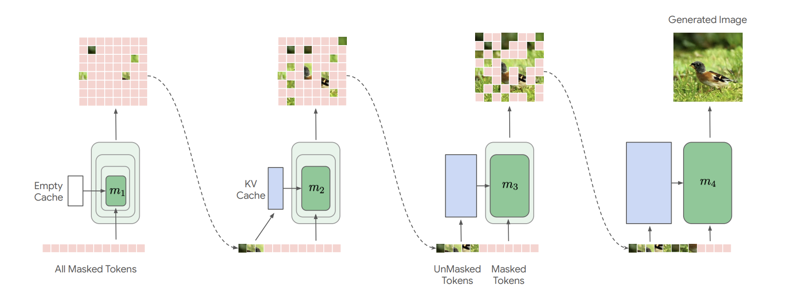
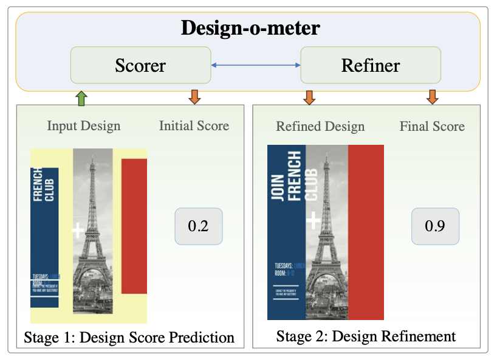
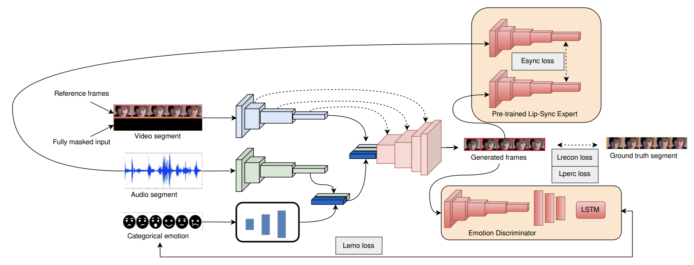
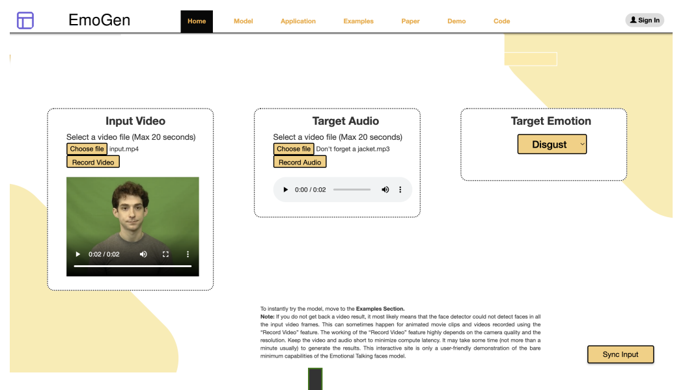

Research Activity
My research focuses are Efficiency of Foundational Models, Computer Vision, Adaptive Compute, and broad deep learning topics in general.
Publications

Masked Generative Nested Transformers with Decode Time Scaling
Sahil Goyal, Debapriya Tula, Prateek Jain, Sujoy Paul et al.
ICML 2025, ICLR (DeLTa Workshop) 2025

Design-o-meter: Towards Evaluating and Refining Graphic Designs
Sahil Goyal, Abhinav Mahajan, KJ Joseph et al.
WACV 2025

Emotionally Enhanced Talking Face Generation
Sahil Goyal, Shagun Uppal, Sarthak Bhagat, et al.
ICCV (CVEU Workshop) 2023 & ACM MM (McGE Workshop) 2023

Emotional Talking Faces: Making Videos More Expressive and Realistic
Sahil Goyal, Shagun Uppal, Sarthak Bhagat, et al.
ACM MM Asia 2022